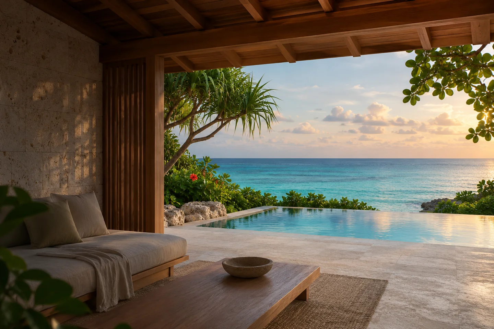
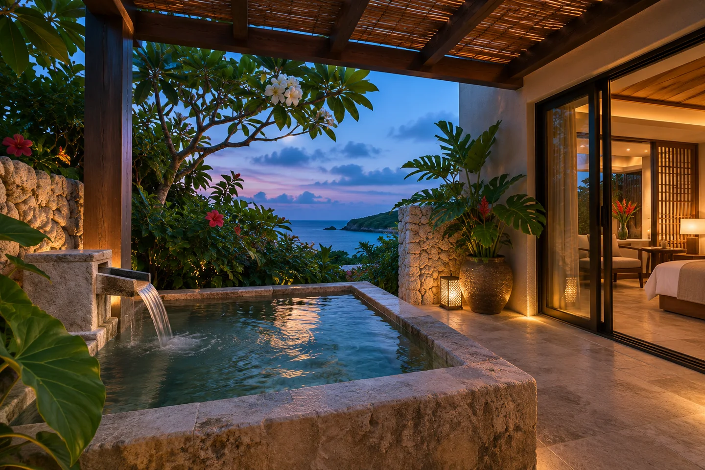

A quiet stay by the sea · OKINAWA
海の近くで、
時間をほどく。
波の音に耳をすませ、風の通り道を見つける。ここでは予定を詰めずに、島の一日をゆっくり過ごします。
架空の宿泊施設を想定した制作サンプル
A room to slow down
何もしない時間が、
旅の記憶になる。
海と庭のあいだに、ひと息つける小さな居場所を。
朝は窓を開け、昼は木陰で本を読み、夜は湯上がりに潮風を感じる。UMI NO MAは、沖縄の西海岸エリアを想定した一棟貸しヴィラのウェブサイトサンプルです。
この場所の考え方を読むPRIVATE VILLA一棟貸しの滞在を想定
SEA & GARDEN海と緑を感じる設計
SLOW MORNING朝食の時間も旅の一部に

A day at UMI NO MA
好きな場所で、
好きな過ごし方を。
決まった観光コースより、自分たちのペースを大切に。気分に合わせて過ごせる場所を用意しました。
